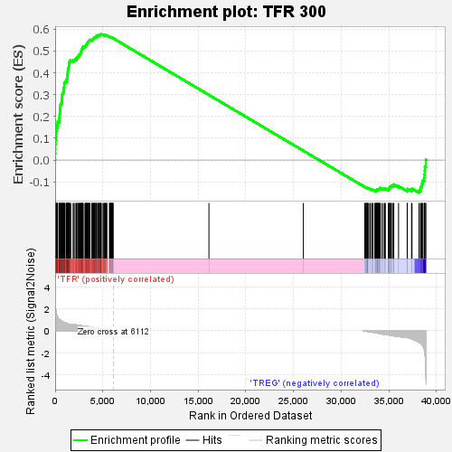
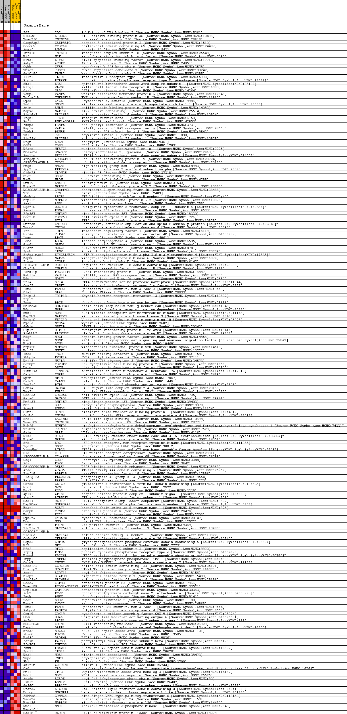
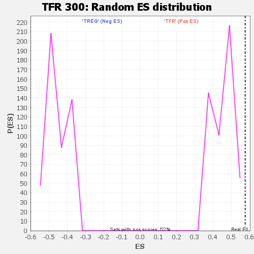

| | | Dataset | BL_TFRvsTREG_TFRvsTREG.tfr_vs_treg_cls.cls#TFR_versus_TREG |
| Phenotype | tfr_vs_treg_cls.cls#TFR_versus_TREG |
| Upregulated in class | TFR |
| GeneSet | TFR 300 |
| Enrichment Score (ES) | 0.5769551 |
| Normalized Enrichment Score (NES) | 1.2695305 |
| Nominal p-value | 0.0 |
| FDR q-value | 0.08628655 |
| FWER p-Value | 0.056 |
Table: GSEA Results Summary

Fig 1: Enrichment plot: TFR 300
Profile of the Running ES Score & Positions of GeneSet Members on the Rank Ordered List
| SYMBOL | TITLE | RANK IN GENE LIST | RANK METRIC SCORE | RUNNING ES | CORE ENRICHMENT | | 1 | Id2 | na | 6 | 3.264 | 0.0301 | Yes |
| 2 | S100a6 | na | 23 | 2.351 | 0.0515 | Yes |
| 3 | Tmem256 | na | 26 | 2.266 | 0.0725 | Yes |
| 4 | Casp8ap2 | na | 49 | 2.004 | 0.0905 | Yes |
| 5 | Ccdc69 | na | 102 | 1.650 | 0.1044 | Yes |
| 6 | Anxa4 | na | 119 | 1.559 | 0.1185 | Yes |
| 7 | Ints10 | na | 125 | 1.528 | 0.1325 | Yes |
| 8 | Mif | na | 190 | 1.366 | 0.1436 | Yes |
| 9 | Siva1 | na | 211 | 1.307 | 0.1552 | Yes |
| 10 | Aebp2 | na | 251 | 1.238 | 0.1656 | Yes |
| 11 | Cybb | na | 261 | 1.221 | 0.1767 | Yes |
| 12 | Tusc3 | na | 440 | 1.024 | 0.1816 | Yes |
| 13 | Gm10184 | na | 446 | 1.016 | 0.1909 | Yes |
| 14 | Il1r1 | na | 462 | 1.007 | 0.1999 | Yes |
| 15 | Ptprv | na | 473 | 1.000 | 0.2089 | Yes |
| 16 | Ska1 | na | 495 | 0.985 | 0.2175 | Yes |
| 17 | Klrg1 | na | 512 | 0.974 | 0.2261 | Yes |
| 18 | Gar1 | na | 523 | 0.970 | 0.2348 | Yes |
| 19 | Vamp5 | na | 536 | 0.962 | 0.2434 | Yes |
| 20 | Tnfrsf1b | na | 546 | 0.957 | 0.2521 | Yes |
| 21 | Cycs | na | 613 | 0.897 | 0.2587 | Yes |
| 22 | Smdt1 | na | 692 | 0.853 | 0.2646 | Yes |
| 23 | Anln | na | 702 | 0.848 | 0.2722 | Yes |
| 24 | Map7d1 | na | 707 | 0.845 | 0.2800 | Yes |
| 25 | Slc16a3 | na | 724 | 0.837 | 0.2873 | Yes |
| 26 | Itgb1 | na | 736 | 0.832 | 0.2947 | Yes |
| 27 | Pmf1 | na | 742 | 0.830 | 0.3023 | Yes |
| 28 | Fkbp5 | na | 815 | 0.796 | 0.3078 | Yes |
| 29 | Rap1a | na | 868 | 0.777 | 0.3137 | Yes |
| 30 | Psmb5 | na | 890 | 0.768 | 0.3203 | Yes |
| 31 | Tk1 | na | 913 | 0.755 | 0.3267 | Yes |
| 32 | Slc25a1 | na | 919 | 0.753 | 0.3336 | Yes |
| 33 | Srgn | na | 951 | 0.742 | 0.3396 | Yes |
| 34 | Cd83 | na | 953 | 0.742 | 0.3465 | Yes |
| 35 | Nfatc1 | na | 956 | 0.740 | 0.3533 | Yes |
| 36 | Dnase2a | na | 1044 | 0.713 | 0.3577 | Yes |
| 37 | Sec11c | na | 1174 | 0.672 | 0.3606 | Yes |
| 38 | Arhgap19 | na | 1187 | 0.668 | 0.3664 | Yes |
| 39 | 4930427A07Rik | na | 1229 | 0.654 | 0.3715 | Yes |
| 40 | Hmgb1 | na | 1247 | 0.650 | 0.3770 | Yes |
| 41 | Ppp2r1a | na | 1264 | 0.642 | 0.3826 | Yes |
| 42 | Cldn25 | na | 1269 | 0.641 | 0.3884 | Yes |
| 43 | B9d2 | na | 1302 | 0.632 | 0.3935 | Yes |
| 44 | Hadh | na | 1318 | 0.627 | 0.3989 | Yes |
| 45 | Snx19 | na | 1328 | 0.624 | 0.4044 | Yes |
| 46 | Mrps12 | na | 1337 | 0.621 | 0.4100 | Yes |
| 47 | D030056L22Rik | na | 1352 | 0.618 | 0.4154 | Yes |
| 48 | Ttn | na | 1402 | 0.603 | 0.4197 | Yes |
| 49 | Abcb1a | na | 1403 | 0.602 | 0.4253 | Yes |
| 50 | Mrpl12 | na | 1444 | 0.592 | 0.4297 | Yes |
| 51 | Ass1 | na | 1475 | 0.586 | 0.4344 | Yes |
| 52 | Uqcr10 | na | 1478 | 0.586 | 0.4398 | Yes |
| 53 | Psma1 | na | 1487 | 0.584 | 0.4450 | Yes |
| 54 | Zfp367 | na | 1513 | 0.579 | 0.4497 | Yes |
| 55 | Cdc25b | na | 1531 | 0.576 | 0.4546 | Yes |
| 56 | Stil | na | 1639 | 0.571 | 0.4571 | Yes |
| 57 | Cntrob | na | 1881 | 0.561 | 0.4561 | Yes |
| 58 | Tmco4 | na | 1976 | 0.554 | 0.4588 | Yes |
| 59 | Irf4 | na | 2093 | 0.540 | 0.4608 | Yes |
| 60 | Eif4e | na | 2229 | 0.523 | 0.4622 | Yes |
| 61 | Lpxn | na | 2241 | 0.523 | 0.4668 | Yes |
| 62 | Ldha | na | 2277 | 0.519 | 0.4707 | Yes |
| 63 | Grwd1 | na | 2379 | 0.504 | 0.4727 | Yes |
| 64 | H2afz | na | 2469 | 0.491 | 0.4750 | Yes |
| 65 | Ipmk | na | 2476 | 0.490 | 0.4794 | Yes |
| 66 | St6galnac4 | na | 2499 | 0.486 | 0.4833 | Yes |
| 67 | Mapk6 | na | 2599 | 0.474 | 0.4852 | Yes |
| 68 | Itgae | na | 2656 | 0.463 | 0.4880 | Yes |
| 69 | 2810428I15Rik | na | 2672 | 0.461 | 0.4919 | Yes |
| 70 | Chaf1b | na | 2707 | 0.455 | 0.4952 | Yes |
| 71 | Pdzk1ip1 | na | 2747 | 0.449 | 0.4984 | Yes |
| 72 | Rab11a | na | 2758 | 0.447 | 0.5023 | Yes |
| 73 | Ndst1 | na | 2759 | 0.447 | 0.5064 | Yes |
| 74 | St14 | na | 2804 | 0.440 | 0.5094 | Yes |
| 75 | Cpsf2 | na | 2879 | 0.436 | 0.5115 | Yes |
| 76 | Psmd2 | na | 2892 | 0.434 | 0.5152 | Yes |
| 77 | Ola1 | na | 2914 | 0.429 | 0.5187 | Yes |
| 78 | Trip13 | na | 3035 | 0.411 | 0.5194 | Yes |
| 79 | Zfp52 | na | 3160 | 0.406 | 0.5199 | Yes |
| 80 | Ppcs | na | 3177 | 0.402 | 0.5233 | Yes |
| 81 | Bhlhe40 | na | 3268 | 0.388 | 0.5245 | Yes |
| 82 | M6pr | na | 3270 | 0.387 | 0.5281 | Yes |
| 83 | Bub1 | na | 3288 | 0.386 | 0.5312 | Yes |
| 84 | Map2k3 | na | 3345 | 0.377 | 0.5333 | Yes |
| 85 | Vsig10 | na | 3371 | 0.373 | 0.5361 | Yes |
| 86 | Myo5a | na | 3419 | 0.367 | 0.5383 | Yes |
| 87 | Gskip | na | 3454 | 0.362 | 0.5408 | Yes |
| 88 | Hip1r | na | 3490 | 0.356 | 0.5432 | Yes |
| 89 | Plekhb2 | na | 3549 | 0.345 | 0.5449 | Yes |
| 90 | Hdgf | na | 3565 | 0.344 | 0.5477 | Yes |
| 91 | Nsmf | na | 3624 | 0.336 | 0.5493 | Yes |
| 92 | Rtn3 | na | 3660 | 0.331 | 0.5515 | Yes |
| 93 | Mrps28 | na | 3859 | 0.302 | 0.5492 | Yes |
| 94 | Nutf2 | na | 3874 | 0.300 | 0.5516 | Yes |
| 95 | Tbcd | na | 3902 | 0.295 | 0.5536 | Yes |
| 96 | Fkbp1a | na | 3981 | 0.284 | 0.5542 | Yes |
| 97 | Neil3 | na | 4026 | 0.277 | 0.5557 | Yes |
| 98 | Cd2bp2 | na | 4046 | 0.275 | 0.5577 | Yes |
| 99 | Dstn | na | 4094 | 0.268 | 0.5590 | Yes |
| 100 | Timm17a | na | 4120 | 0.264 | 0.5608 | Yes |
| 101 | Csrp1 | na | 4140 | 0.262 | 0.5627 | Yes |
| 102 | Nptn | na | 4250 | 0.247 | 0.5622 | Yes |
| 103 | Calm3 | na | 4265 | 0.245 | 0.5641 | Yes |
| 104 | Ppp2r4 | na | 4319 | 0.237 | 0.5650 | Yes |
| 105 | Haus4 | na | 4326 | 0.237 | 0.5670 | Yes |
| 106 | Vma21 | na | 4340 | 0.235 | 0.5689 | Yes |
| 107 | Cdc25a | na | 4466 | 0.219 | 0.5676 | Yes |
| 108 | Gatad1 | na | 4499 | 0.213 | 0.5688 | Yes |
| 109 | Rnf157 | na | 4539 | 0.209 | 0.5697 | Yes |
| 110 | Dut | na | 4548 | 0.208 | 0.5715 | Yes |
| 111 | Sumo3 | na | 4655 | 0.192 | 0.5705 | Yes |
| 112 | Hint1 | na | 4663 | 0.191 | 0.5721 | Yes |
| 113 | Cnih4 | na | 4693 | 0.186 | 0.5731 | Yes |
| 114 | Sec14l1 | na | 4714 | 0.184 | 0.5743 | Yes |
| 115 | Tmem109 | na | 4761 | 0.179 | 0.5747 | Yes |
| 116 | Mthfd1 | na | 4790 | 0.173 | 0.5756 | Yes |
| 117 | Trim37 | na | 4801 | 0.172 | 0.5770 | Yes |
| 118 | Gale | na | 4927 | 0.157 | 0.5752 | No |
| 119 | Dis3 | na | 5053 | 0.140 | 0.5733 | No |
| 120 | Mrps6 | na | 5124 | 0.132 | 0.5727 | No |
| 121 | Src | na | 5204 | 0.119 | 0.5717 | No |
| 122 | Sgol2 | na | 5225 | 0.118 | 0.5723 | No |
| 123 | Xrcc6bp1 | na | 5238 | 0.117 | 0.5731 | No |
| 124 | C1d | na | 5282 | 0.112 | 0.5730 | No |
| 125 | 1700066M21Rik | na | 5366 | 0.099 | 0.5718 | No |
| 126 | Coq7 | na | 5427 | 0.090 | 0.5711 | No |
| 127 | Fdxr | na | 5694 | 0.053 | 0.5647 | No |
| 128 | 0610009O20Rik | na | 5736 | 0.048 | 0.5641 | No |
| 129 | Atad5 | na | 5765 | 0.043 | 0.5638 | No |
| 130 | Prpf19 | na | 5774 | 0.042 | 0.5639 | No |
| 131 | Pla2g12a | na | 5841 | 0.034 | 0.5625 | No |
| 132 | Parp1 | na | 5864 | 0.031 | 0.5623 | No |
| 133 | Gstcd | na | 5894 | 0.027 | 0.5618 | No |
| 134 | Nrn1 | na | 5919 | 0.023 | 0.5614 | No |
| 135 | Egr2 | na | 5933 | 0.022 | 0.5612 | No |
| 136 | Ap1s1 | na | 5988 | 0.015 | 0.5600 | No |
| 137 | Atpif1 | na | 6013 | 0.011 | 0.5594 | No |
| 138 | Rad17 | na | 6065 | 0.005 | 0.5582 | No |
| 139 | Hsp90aa1 | na | 6079 | 0.004 | 0.5579 | No |
| 140 | Bcat1 | na | 16130 | 0.000 | 0.2983 | No |
| 141 | Cenpk | na | 26034 | 0.000 | 0.0426 | No |
| 142 | Eci1 | na | 32475 | -0.018 | -0.1236 | No |
| 143 | Cyb5r4 | na | 32525 | -0.024 | -0.1246 | No |
| 144 | Ung | na | 32543 | -0.027 | -0.1248 | No |
| 145 | Prim1 | na | 32629 | -0.038 | -0.1266 | No |
| 146 | Slc25a13 | na | 32683 | -0.046 | -0.1276 | No |
| 147 | C030034L19Rik | na | 32753 | -0.056 | -0.1288 | No |
| 148 | Slc16a1 | na | 32765 | -0.057 | -0.1286 | No |
| 149 | Ccdc104 | na | 32788 | -0.059 | -0.1286 | No |
| 150 | Gdpd5 | na | 32794 | -0.060 | -0.1282 | No |
| 151 | Nf2 | na | 32895 | -0.074 | -0.1301 | No |
| 152 | Rfc2 | na | 33028 | -0.092 | -0.1326 | No |
| 153 | Ptprj | na | 33190 | -0.113 | -0.1358 | No |
| 154 | Ercc6l | na | 33281 | -0.124 | -0.1369 | No |
| 155 | Inppl1 | na | 33336 | -0.134 | -0.1371 | No |
| 156 | Cmtm7 | na | 33525 | -0.163 | -0.1404 | No |
| 157 | Ccdc124 | na | 33612 | -0.176 | -0.1410 | No |
| 158 | Htatip2 | na | 33622 | -0.178 | -0.1396 | No |
| 159 | Acot11 | na | 33711 | -0.192 | -0.1401 | No |
| 160 | Diap3 | na | 33751 | -0.198 | -0.1393 | No |
| 161 | Slc45a4 | na | 33762 | -0.200 | -0.1377 | No |
| 162 | Ccdc41 | na | 33765 | -0.200 | -0.1359 | No |
| 163 | Tmem189 | na | 33825 | -0.210 | -0.1354 | No |
| 164 | Cep170b | na | 33888 | -0.220 | -0.1350 | No |
| 165 | Pck2 | na | 33914 | -0.225 | -0.1336 | No |
| 166 | Pmvk | na | 33978 | -0.236 | -0.1330 | No |
| 167 | Sod2 | na | 34008 | -0.239 | -0.1315 | No |
| 168 | Exoc2 | na | 34052 | -0.247 | -0.1304 | No |
| 169 | Psmd1 | na | 34061 | -0.248 | -0.1283 | No |
| 170 | Pabpc4 | na | 34248 | -0.281 | -0.1305 | No |
| 171 | Cox19 | na | 34420 | -0.317 | -0.1319 | No |
| 172 | Uba6 | na | 34563 | -0.342 | -0.1324 | No |
| 173 | Ap2s1 | na | 34634 | -0.356 | -0.1309 | No |
| 174 | BC052040 | na | 34963 | -0.365 | -0.1360 | No |
| 175 | Dapp1 | na | 34979 | -0.368 | -0.1330 | No |
| 176 | Brca2 | na | 35051 | -0.385 | -0.1313 | No |
| 177 | Fbxo6 | na | 35056 | -0.386 | -0.1278 | No |
| 178 | Rad54l | na | 35066 | -0.387 | -0.1244 | No |
| 179 | Farsb | na | 35180 | -0.412 | -0.1235 | No |
| 180 | Zfp703 | na | 35198 | -0.415 | -0.1201 | No |
| 181 | Fbxw11 | na | 35260 | -0.427 | -0.1177 | No |
| 182 | Ipo11 | na | 35392 | -0.443 | -0.1170 | No |
| 183 | Noa1 | na | 35505 | -0.455 | -0.1157 | No |
| 184 | Tmpo | na | 35518 | -0.457 | -0.1118 | No |
| 185 | Fh1 | na | 36020 | -0.528 | -0.1198 | No |
| 186 | Akirin1 | na | 36924 | -0.614 | -0.1374 | No |
| 187 | Cad | na | 36943 | -0.620 | -0.1321 | No |
| 188 | Hn1l | na | 37380 | -0.734 | -0.1366 | No |
| 189 | Ndc1 | na | 37433 | -0.749 | -0.1310 | No |
| 190 | Acads | na | 38168 | -1.049 | -0.1402 | No |
| 191 | Lsm12 | na | 38332 | -1.128 | -0.1340 | No |
| 192 | Gm5601 | na | 38340 | -1.130 | -0.1237 | No |
| 193 | Stard4 | na | 38468 | -1.256 | -0.1153 | No |
| 194 | Hnrnpll | na | 38491 | -1.280 | -0.1040 | No |
| 195 | Zdhhc6 | na | 38565 | -1.373 | -0.0932 | No |
| 196 | Tada2a | na | 38707 | -1.669 | -0.0813 | No |
| 197 | Mrpl36 | na | 38735 | -1.774 | -0.0656 | No |
| 198 | Nme1 | na | 38769 | -1.960 | -0.0483 | No |
| 199 | Hspa14_1 | na | 38786 | -2.049 | -0.0297 | No |
| 200 | Rad18 | na | 38888 | -3.572 | 0.0009 | No |
Table: GSEA details [plain text format]

Fig 2: TFR 300
Blue-Pink O' Gram in the Space of the Analyzed GeneSet

Fig 3: TFR 300: Random ES distribution
Gene set null distribution of ES for TFR 300